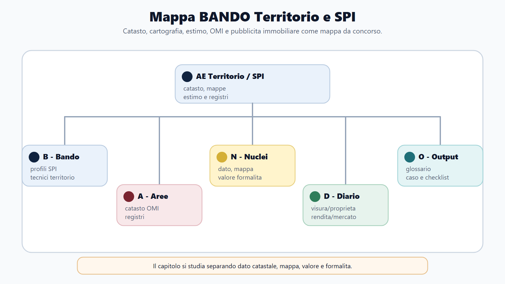
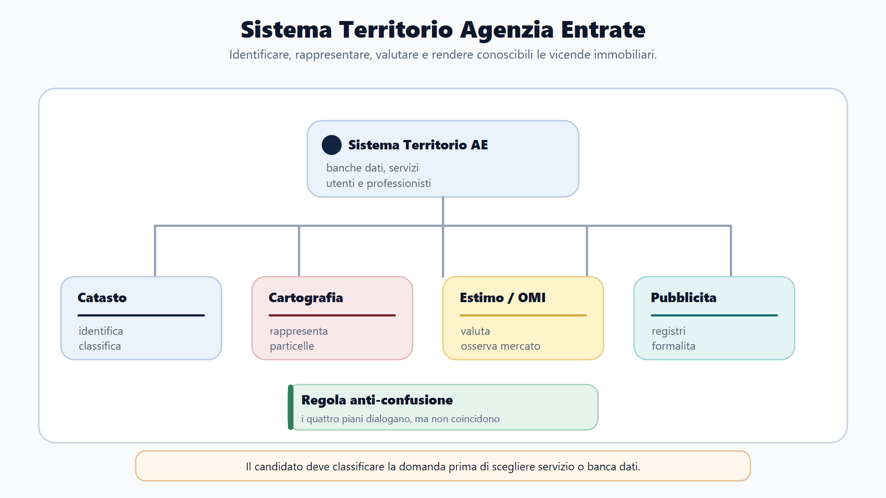
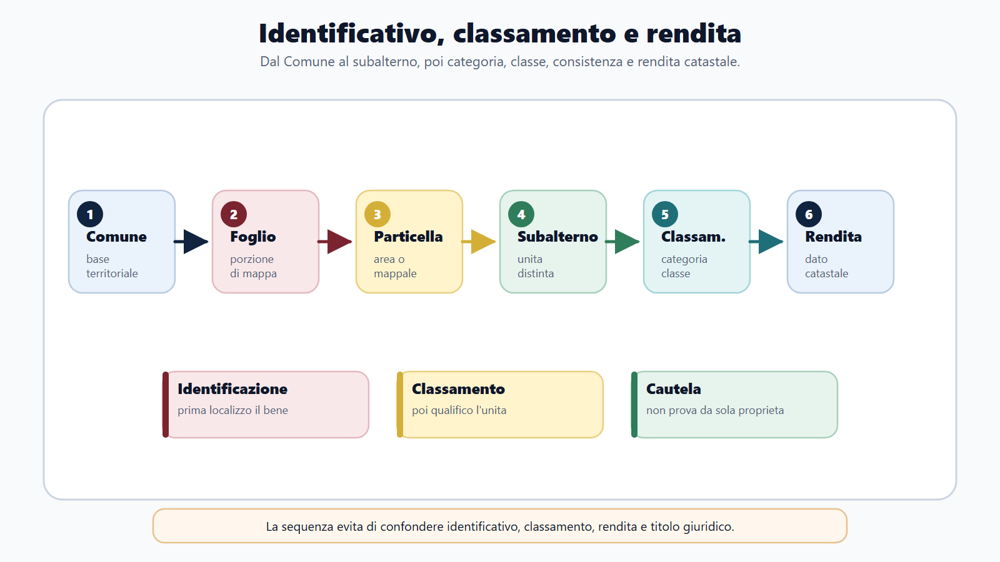
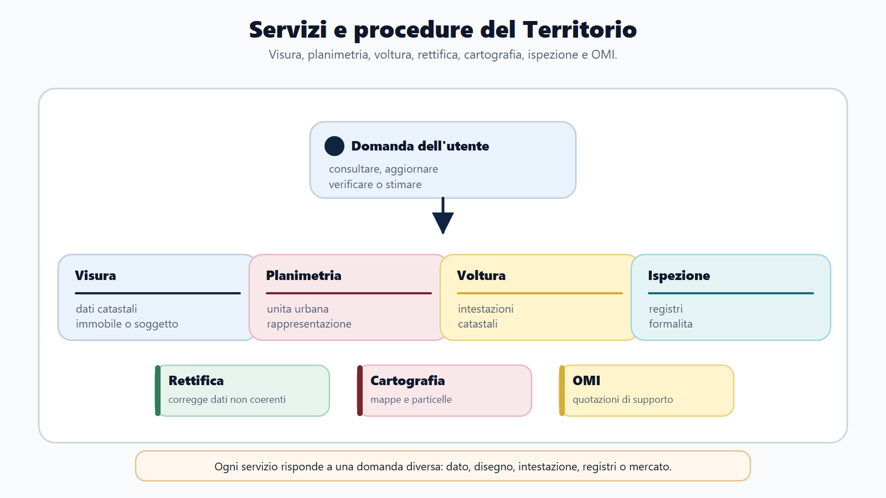

VOL-03 · Capitolo 27
M-FC02
Catasto, cartografia, estimo
e pubblicità immobiliare
Una visura catastale e un’ispezione ipotecaria possono riferirsi allo stesso appartamento, ma rispondono a domande diverse. La prima descrive l’unità, identificativi, rendita e intestazione. La seconda ricostruisce le formalità su diritti, trasferimenti, ipoteche e vincoli.
01 · Il problema in prova
Quattro profili, un immobile
Il profilo fisico-cartografico colloca il bene sul territorio. Quello catastale lo censisce e gli attribuisce dati reddituali. Quello estimativo ne analizza il valore. La pubblicità immobiliare rende conoscibili le vicende giuridiche previste dalla legge.
Che cos’è il catasto
Inventario dei beni immobili. Identifica terreni e fabbricati, ne registra caratteristiche, intestazioni e redditi catastali. Funzione prevalentemente fiscale, conoscitiva e amministrativa. Nel sistema ordinario italiano non ha efficacia probatoria piena della proprietà.
A che serve in prova
A non attribuire al catasto la prova del titolo, a non usare una quotazione OMI come perizia e a non trattare una voltura come trascrizione dell’atto. Se visura e atto notarile divergono, non si conclude automaticamente che il titolare catastale sia proprietario.
Le banche dati dialogano, ma non coincidono.
Identificare, rappresentare, valutare, rendere conoscibili. Il collegamento fra banche dati non elimina le differenze di funzione, effetto e responsabilità. L’Agenzia delle Entrate gestisce catasto e pubblicità attraverso gli Uffici provinciali - Territorio e i Servizi di pubblicità immobiliare.
02 · BANDO
Cinque decisioni su questo capitolo
| Che cosa fai | Se la salti | |
|---|---|---|
| B — Bando | Cerca catasto, cartografia, estimo, topografia, OMI, pubblicità immobiliare, imposte ipotecarie, servizi telematici. | Studi un elenco di sigle senza funzione. |
| A — Aree | Collega tecnica catastale, civile, fiscalità immobiliare, procedimento, geomatica, valutazione. | Tratti la visura come titolo di proprietà. |
| N — Nuclei | Particella, subalterno, classamento, rendita, DOCFA, PREGEO, voltura, trascrizione, iscrizione, annotazione. | Confondi dato catastale e titolo. |
| D — Diario | Rendita/valore, voltura/trascrizione, visura/ispezione, mappa/planimetria. | Ripeti le quattro trappole all’orale. |
| O — Output | Aggiornamento catastale e verifiche prima di un acquisto, in risposta orale. | Elenco di procedure senza domanda. |
03 · Mappa
Territorio e SPI nello stesso concorso
Prima si individua la domanda, poi la banca dati. Catasto, cartografia, estimo, OMI e pubblicità restano funzioni distinte.

Il bando attiva identificativi, classamento, procedure e formalità: non un unico sportello per ogni domanda.
04 · Sistema
Identificare, rappresentare, valutare, pubblicare
Il catasto terreni censisce particelle, qualità colturali, classi e redditi dominicale e agrario. Il catasto dei fabbricati censisce le unità immobiliari urbane. Una nuova costruzione richiede prima l’aggiornamento geometrico della particella e poi la dichiarazione delle unità: operazioni distinte.
Il reddito dominicale si collega alla proprietà del fondo; quello agrario all’esercizio dell’attività agricola e all’impiego del capitale e del lavoro organizzativo. L’unità immobiliare presenta autonomia funzionale e reddituale secondo la disciplina catastale.
Quattro funzioni collegate: il dialogo tra banche dati non elimina le differenze.

05 · Identificativi
Dal Comune al subalterno, poi la rendita
Comune catastale, eventuale sezione, foglio, particella e, per le unità, subalterno. La visura riporta identificativi, classamento, consistenza, rendita, intestazioni e variazioni. Cercare soltanto il nome del proprietario non basta.

Categoria, classe e consistenza (vani, metri quadrati o cubi) conducono alla rendita. La rendita è un reddito ordinario teorico, non il prezzo dell’immobile.
06 · Procedure
DOCFA, PREGEO, voltura
L’accettazione informatica non rende definitiva la proposta DOCFA. L’ufficio controlla completezza, coerenza e conformità catastale. Una planimetria registrata non sana un abuso edilizio. PREGEO aggiorna la geometria: non decide il confine giuridico. La voltura non trasferisce il diritto.
| Procedura | Oggetto | Limite |
|---|---|---|
| DOCFA | Unità urbane: nuova costruzione o variazione, planimetrie, proposta di classamento (D.M. 701/1994). | Controllo catastale; non sana profili edilizi. |
| PREGEO | Geometria del catasto terreni: frazionamento, tipo mappale, atti geometrici. | Controlli tecnici; non risolve un confine controverso. |
| Voltura | Intestazioni catastali dopo titolo o fatto già intervenuto. | Non rende valido un titolo errato; l’ufficio non è un giudice civile. |
| Docte | Variazioni colturali, nelle specifiche applicabili. | Versione e canali da verificare sulle istruzioni vigenti. |
07 · Cartografia ed estimo
Mappa, stima, OMI: tre strumenti
La mappa catastale privilegia identificazione particellare e aggiornamento fiscale: non coincide necessariamente con una carta topografica o urbanistica. Una sovrapposizione GIS visivamente convincente non prova da sola un confine giuridico. L’estimo formula un giudizio motivato: scopo, data, diritto valutato, mercato, procedimento.
Procedimenti di stima
Comparativo: confronti con scambi simili. Reddituale: capitalizza un reddito ordinario. Del costo: riproduzione o sostituzione. Esempio didattico: tre comparabili omogeneizzati a 2.050, 2.120 e 1.980 €/m²; media 2.050; 80 m² → 164.000 euro. I numeri allenano il metodo, non sono quotazioni correnti.
Quotazioni OMI
Intervalli semestrali per zone, tipologie e stati. Esprimono l’ordinarietà della zona. Non sostituiscono una stima puntuale. Moltiplicare il valore medio per i metri quadrati produce un’indicazione sommaria, non una perizia. Rendita, OMI e stima restano distinti.
Usare la quotazione OMI come valore certo. L’intervallo riguarda immobili ordinari di una zona e di un semestre; la stima puntuale considera caratteristiche, diritto valutato e finalità.
08 · Pubblicità
Trascrizione, iscrizione, annotazione
Il sistema italiano è prevalentemente personale: la ricerca si sviluppa a partire dai soggetti. La pubblicità dichiarativa rende opponibile l’atto e risolve conflitti secondo la priorità di legge. In altre ipotesi la formalità può avere efficacia costitutiva o di pubblicità-notizia.
| Formalità | Funzione tipica | Esempio |
|---|---|---|
| Trascrizione | Pubblicità di atti e vicende su diritti immobiliari. | Compravendita, pignoramento. |
| Iscrizione | Pubblicità e, nei casi previsti, costituzione dell’ipoteca. | Ipoteca volontaria per mutuo. |
| Annotazione | Modifica o collega una formalità precedente. | Cancellazione dell’ipoteca. |
L’ispezione consulta registri, note e titoli. Una formalità «contro» un soggetto non è necessariamente ancora efficace: occorre leggere annotazioni successive. La continuità delle trascrizioni collega le formalità alla precedente titolarità pubblicizzata.
09 · Servizi
Che cosa fa l’ufficio, che cosa non fa
Nei servizi catastali si trattano dichiarazioni, atti geometrici, volture, visure. Nei servizi estimativi: dati, sopralluoghi, mercati. Nei SPI: formalità, ispezioni, certificazioni. L’ufficio non redige il progetto per il tecnico, non certifica la proprietà mediante una visura e non offre una perizia individuale basata soltanto su OMI.

Visura, planimetria, voltura, rettifica, cartografia, ispezione e OMI: scegliere il servizio dopo aver classificato la domanda.
10 · Caso guidato
Appartamento frazionato e venduto
Un proprietario divide un appartamento in due unità e intende venderne una. Il tecnico presenta solo il DOCFA, sostenendo che il nuovo subalterno sia sufficiente per il rogito.
| Piano | Ragionamento |
|---|---|
| Catasto | Il DOCFA rappresenta la variazione urbana, sopprime l’unità originaria e costituisce i nuovi subalterni con planimetrie e proposta di classamento. |
| Urbanistica | La variazione catastale non prova la legittimità edilizia del frazionamento. |
| Diritto | La proprietà delle porzioni deriva dal titolo e dall’atto di vendita, non dal solo nuovo identificativo. |
| Pubblicità | Il rogito viene trascritto con i corretti dati soggettivi e immobiliari. |
| Voltura | L’intestazione si aggiorna sulla base dell’atto, di regola tramite i flussi collegati o con la procedura necessaria. |
11 · Verifica
Due domande da saper spiegare
Differenza tra catasto e pubblicità immobiliare
Funzione inventariale e fiscale del catasto; identificativi, rendita e intestazione; ordinaria non probatorietà. Registri immobiliari e formalità. Distinguere visura e ispezione. Chiudere con voltura e trascrizione: aggiornamento catastale e pubblicità civilistica non coincidono.
La planimetria catastale dimostra la regolarità urbanistica?
No. Catasto e disciplina urbanistico-edilizia hanno funzioni diverse. La corrispondenza catastale è rilevante, ma non sana né prova da sola la legittimità edilizia.
12 · Mini-esercizio
Quale procedura o servizio
| Bisogno | Strumento |
|---|---|
| Inserire in mappa un nuovo fabbricato | PREGEO e tipo mappale, secondo il caso. |
| Dichiarare due unità da frazionamento | DOCFA con causale, planimetrie e classamento proposto. |
| Aggiornare l’intestazione dopo una successione non acquisita | Voltura catastale: titolo, soggetti e quote. |
| Verificare se esiste un’ipoteca | Ispezione ipotecaria, non visura catastale. |
| Cercare un intervallo orientativo di zona | Quotazioni OMI, con semestre, zona, tipologia e stato. |
13 · Anti-confusione
Cinque coppie da tenere distinte
| Coppia | Differenza essenziale |
|---|---|
| Catasto / pubblicità immobiliare | Il primo identifica e classifica; la seconda rende conoscibili vicende giuridiche. |
| Visura / ispezione ipotecaria | Dati catastali contro formalità, note e titoli. |
| Rendita / OMI / stima | Dato catastale, intervallo orientativo, giudizio estimativo. |
| Mappa / planimetria | Particelle contro unità urbana. |
| Voltura / trasferimento | Aggiornamento di intestazione contro titolo o fatto giuridico. |
14 · Classamento
Categoria, classe, consistenza
Il classamento colloca l’unità in categoria e classe e ne determina la consistenza secondo il quadro tariffario. La categoria esprime destinazione ordinaria e caratteristiche tipologiche; la classe il livello di capacità reddituale nella zona censuaria. Anche quando la rendita è rivalutata o moltiplicata per coefficienti fiscali, non si trasforma automaticamente in valore di mercato.
Identificativo
Comune, foglio, particella, subalterno.
Classamento
Categoria, classe, consistenza.
Rendita
Reddito ordinario teorico, non prezzo.
15 · Da tenere ferme
Cinque regole, con il perché
1. Il catasto censisce e attribuisce dati fiscali; non prova ordinariamente la proprietà.
2. DOCFA aggiorna le unità urbane, PREGEO la geometria del catasto terreni.
3. Rendita catastale, quotazione OMI e valore di mercato sono concetti diversi.
4. Trascrizione, iscrizione e annotazione hanno funzioni distinte.
5. Visura catastale e ispezione ipotecaria rispondono a domande differenti.
16 · Prima di concludere la pratica
Titolo, soggetti, dati, elaborati
Un identificativo errato può riferire una formalità al bene sbagliato. Una categoria impropria incide sulla rendita. Una ricerca ipotecaria incompleta può nascondere un vincolo. Con professionisti e cittadini l’ufficio chiarisce requisiti e stato della pratica, senza sostituirsi al tecnico o al notaio.
Visura attuale e storica
L’attuale fotografa la situazione registrata; la storica ricostruisce le modifiche nell’arco consultabile. Un subalterno soppresso o una variazione non allineata richiedono approfondimenti senza implicare, da soli, un vizio del titolo.
Georeferenziazione
Collega la rappresentazione a un sistema di coordinate. Precisione grafica originaria, deformazioni dei fogli e qualità dei punti di appoggio condizionano il risultato. Cautela nelle trasformazioni tra sistemi.
Prossimo capitolo
Contabilità aziendale ed economia d’impresa per il fisco
L’immobile è letto su quattro profili. Il capitolo successivo insegna a leggere l’impresa: utile e cassa possono divergere, ricavo e incasso non coincidono, il bilancio non è l’imposta.